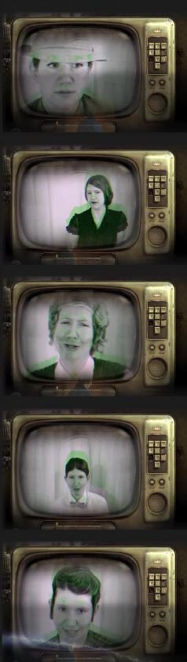

Radio Dish
Source Material: [radio show] 2000+, The Brooklyn Brain, 1950
Size: 14” x 12” x 6”
Media: mixed media, video
Materials: silver dish, grapes, digital picture frame
8-13-13 Davis, California. This sculpture features an antique silver dish retrofited to play a video. When you watch Radio Dish, you will take a trip back in time to a space where every character in a 1950s Brooklyn saga is Emily, even the ghost figure watching the TV in the foreground. The audio is original source material from a 1950s science fiction radio show called 2000+. The scenes are a playful interpretation of the story of a Brooklynite who wants to be an expert on art, and the mad scientist who makes this dream come true.

